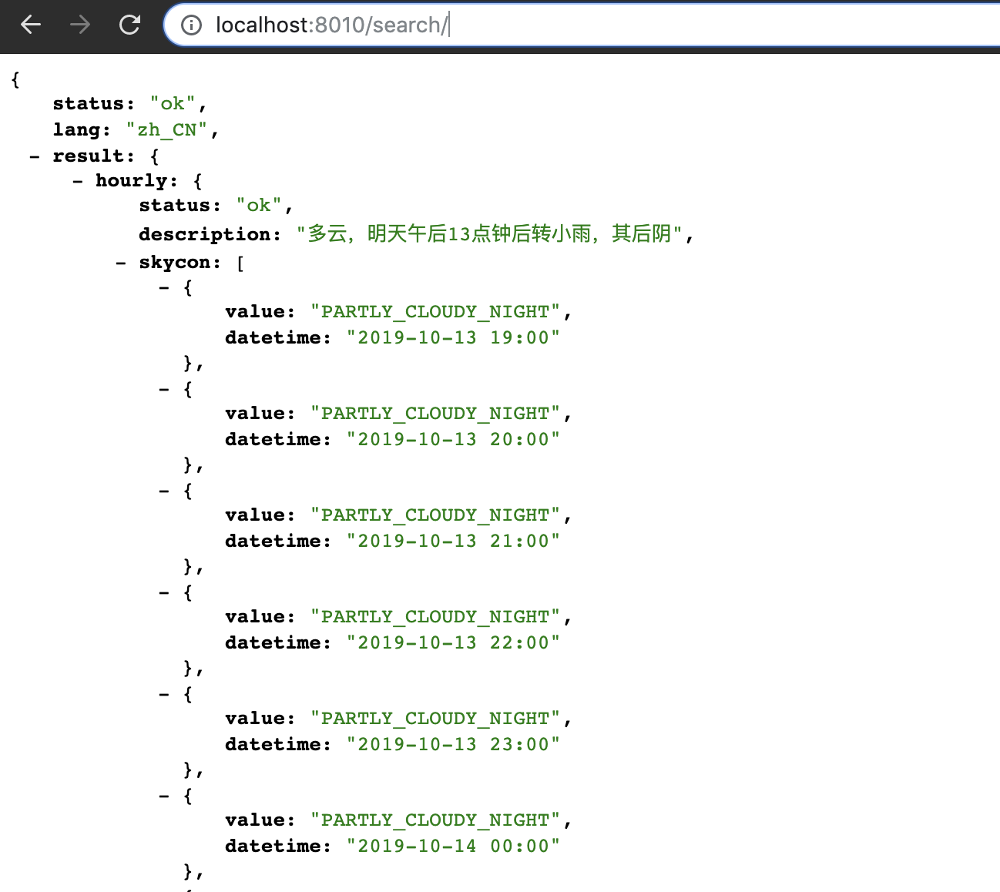

feign是一种声明式，模板化的HTTP客户端，spring cloud对feign进行了增强，使其支持SpringMvc的相关注解，并整合了ribbon做负载均衡。在spring cloud中使用feign做HTTP远程服务请求，可以做到就像调用本地方法一样，完全感知不到是在调用远程方法，具体特性如下：
<parent>
<groupId>org.springframework.boot</groupId>
<artifactId>spring-boot-starter-parent</artifactId>
<version>2.0.3.RELEASE</version>
<relativePath/>
</parent>
<properties>
<project.build.sourceEncoding>UTF-8</project.build.sourceEncoding>
<project.reporting.outputEncoding>UTF-8</project.reporting.outputEncoding>
<java.version>1.8</java.version>
<spring-cloud.version>Finchley.RELEASE</spring-cloud.version>
</properties>
<dependencyManagement>
<dependencies>
<dependency>
<groupId>org.springframework.cloud</groupId>
<artifactId>spring-cloud-dependencies</artifactId>
<version>${spring-cloud.version}</version>
<type>pom</type>
<scope>import</scope>
</dependency>
</dependencies>
</dependencyManagement>
<dependencies>
<dependency>
<groupId>org.springframework.boot</groupId>
<artifactId>spring-boot-starter-web</artifactId>
</dependency>
<!-- Spring Cloud OpenFeign的Starter的依赖 -->
<dependency>
<groupId>org.springframework.cloud</groupId>
<artifactId>spring-cloud-starter-openfeign</artifactId>
</dependency>
</dependencies>
<build>
<plugins>
<plugin>
<groupId>org.springframework.boot</groupId>
<artifactId>spring-boot-maven-plugin</artifactId>
</plugin>
</plugins>
</build>import org.springframework.boot.SpringApplication;
import org.springframework.boot.autoconfigure.SpringBootApplication;
import org.springframework.cloud.openfeign.EnableFeignClients;
@SpringBootApplication
@EnableFeignClients
public class SpringCloudFeignApplication {
public static void main(String[] args) {
SpringApplication.run(SpringCloudFeignApplication.class, args);
}
}可以看到启动类上加了 @EnableFeignClients 注解，意思是当该工程在启动的时候，会进行包扫描，扫描该启动类包以下，子包中所有带 @FeignClient 注解的类（包括启动类所在包），并进行处理。
HelloFeignService接口：
import cn.springcloud.book.feign.config.HelloFeignServiceConfig;
import org.springframework.cloud.openfeign.FeignClient;
import org.springframework.web.bind.annotation.RequestMapping;
import org.springframework.web.bind.annotation.RequestMethod;
//https://api.caiyunapp.com/v2/TAkhjf8d1nlSlspN/121.6544,25.1552/forecast.json 彩云天气API
@FeignClient(name = "caiyunapp", url = "https://api.caiyunapp.com/v2/TAkhjf8d1nlSlspN/121.6544,25.1552", configuration = HelloFeignServiceConfig.class)
public interface HelloFeignService {
@RequestMapping(value = "/forecast.json", method = RequestMethod.GET)
String searchRepo();
}如上所示，@FeignClient注解手动指定了URL，最终会根据指定的URL和@RequestMapping对应的方法转换成完整的请求地址。如下：https://api.caiyunapp.com/v2/TAkhjf8d1nlSlspN/121.6544,25.1552/forecast.json
HelloFeignServiceConfig配置类：
import feign.Logger;
import org.springframework.context.annotation.Bean;
import org.springframework.context.annotation.Configuration;
@Configuration
public class HelloFeignServiceConfig {
/**
* Logger.Level 的具体级别如下：
* NONE：不记录任何信息
* BASIC：仅记录请求方法、URL以及响应状态码和执行时间
* HEADERS：除了记录 BASIC级别的信息外，还会记录请求和响应的头信息
* FULL：记录所有请求与响应的明细，包括头信息、请求体、元数据
*
* @return
*/
@Bean
Logger.Level feignLoggerLevel() {
return Logger.Level.FULL;
}
}controller类：
import cn.springcloud.book.feign.service.HelloFeignService;
import org.springframework.beans.factory.annotation.Autowired;
import org.springframework.http.ResponseEntity;
import org.springframework.web.bind.annotation.GetMapping;
import org.springframework.web.bind.annotation.RequestParam;
import org.springframework.web.bind.annotation.RestController;
@RestController
public class HelloFeignController {
@Autowired
private HelloFeignService helloFeignService;
// 服务消费者对位提供的服务
@GetMapping(value = "/search")
public String searchGithubRepoByStr(@RequestParam("str") String queryStr) {
return helloFeignService.searchRepo(queryStr);
}
}如上所示，controller类中注入了上面编写的接口类，直接调用了相关方法。
2.1、执行命令：
mvn spring-boot:run2.2、访问：losthost:8080/search/

说明访问成功！